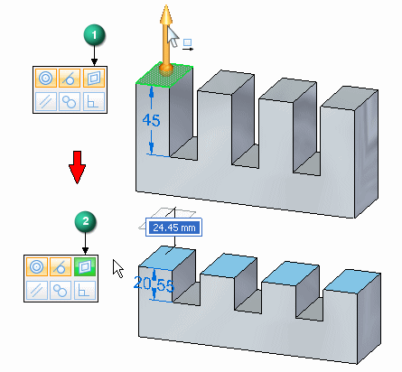
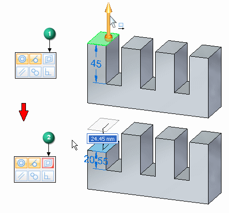
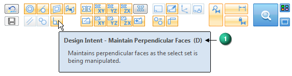
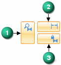
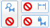
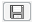
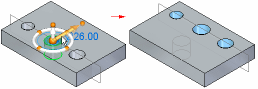
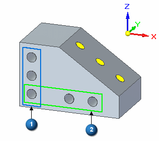
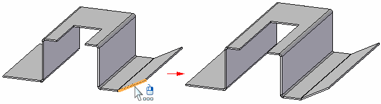
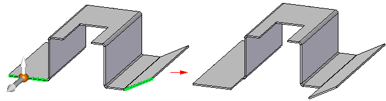

Using the Advanced Design Intent panel
To open the Advanced Design Intent panel, select the Advanced... option in the Design Intent panel or press V. See Using the Design Intent panel for more information about opening the Advanced Design Intent panel.
Use the buttons on the Advanced Design Intent panel to select which design intent relationships you want to preserve or ignore
when you move a face or feature on a synchronous model.
Each of the icons represents a different relationship or a panel control. Tooltips identify the associated relationship and keyboard shortcut.
An activated icon represents a relationship that is evaluated and preserved. Deactivate icons for any design intent relationships you do not want to preserve in the move.
Relationship detection indicators in the Advanced Design Intent panel
-
Detected and active
If the Advanced Design Intent panel identifies a relationship that matches an active setting (1), the icon appears in green (2).

-
Detected and inactive
When the Advanced Design Intent panel detects model geometry that matches an inactive setting (1), the icon appears in red (2) to indicate that detected relationships were suppressed.

Advanced Design Intent panel operations
When pausing the cursor over panel options, the character shown in parenthesis (1) indicates the shortcut key used to toggle the option on or off.

- Large icon group
-
The large icon group on the right of the Advanced Design Intent panel includes the controls used to manage the following functions:

-
(1) Suspend Design Intent Settings (U) — Turn off to suspend all Design Intent relationship evaluation. Only the faces and features in the select group are moved if possible.
-
(2) Relax Dimensions (J) — Turn off to relax all locked dimensions during the current edit. See Dimensioning overview for more information.
-
(3) Relax Persisted relationships (N) — Turn off to relax all Persistent Relationships during the current edit. Any Persistent Relationships that you previously defined are shown in the PathFinder. See Defining relationships between model faces for more information.
When a relationship category is suspended, the button changes as shown.

-
- Restore (R)
-
Click to restore the default Design Intent settings on the Advanced Design Intent panel. Any manual changes to settings that you previously made are restored to their default setting. All settings are restored to the default conditions when you close the session.

Save Relationships (F)-
Click to create Persistent Relationships for all found relationships. The resulting relationships are displayed in the PathFinder under Relationships heading. See Defining relationships between model faces for more information about persistent relationships. This option is not available in the assembly environment.
- Relationship Considerations
-
- Maintain Concentric Faces (C)
-
When turned on, the position and orientation of revolved or cylindrical elements are maintained in relation to the select set during a move. See Concentric command for more information about concentric relationships.
- Maintain Tangent Faces (T)
-
When turned on, the edge tangency is maintained between tangent elements and the select set during a move. See Tangent command for more information about tangent relationships.
- Maintain Coplanar Faces (P)
-
When turned on, coplanar alignment is maintained between elements on the same plane as the select set during a move. See Coplanar command for more information about coplanar relationships.
- Maintain Parallel Faces (L)
-
When turned on, the position and orientation of one or more elements that are parallel to the select set are maintained during a move. See Parallel command for more information about parallel relationships.
- Tangent Touching (G)
-
When turned on, the touching tangency between faces of different bodies is maintained between the bodies and the select set during a move. The faces must not share an edge and the tangency must not be on a trimmed surface boundary. See Multi-body modeling for more information about modeling with more than one body.
- Maintain Perpendicular Faces (D)
-
When turned on, elements that are perpendicular to the select set maintain their perpendicular relationships during a move. See Perpendicular command for more information about perpendicular relationships.
- Maintain Symmetry About Base Planes (S)
-
When turned on, symmetry is maintained around the base reference planes that have been turned on. Each of the base planes can be individually turned on or off in conjunction with this command.
- Maintain Symmetry About Base XY Plane (X)
-
When turned on, symmetry is maintained around the base XY reference plane.
- Maintain Symmetry About Base YZ Plane (Y)
-
When turned on, symmetry is maintained around the base YZ reference plane.
- Maintain Symmetry About Base ZX Plane (Z)
-
When turned on, symmetry is maintained around the base ZX reference plane.
- Maintain Aligned Holes (A)
-
When turned on, hole, cylindrical, and conical alignment is maintained around the base reference planes that have been turned on. Each of the base planes can be individually turned on or off in conjunction with this command.
This option is useful for maintaining the alignment of cylindrical faces whose axes are aligned along one of the common base planes.

This option is available only for faces or features that have an axis, such as cylinders, cones, holes, and manufactured features that have a feature origin, such as dimples in a sheet metal model.
- Maintain Aligned Holes in XY (Q)
-
When turned on, holes are aligned around the base XY reference plane.
- Maintain Aligned Holes in YZ (W)
-
When turned on, holes are aligned around the base YZ reference plane.
- Maintain Aligned Holes in ZX (E)
-
When turned on, holes are aligned around the base ZX reference plane.
- Local Symmetry (Ctrl+Y)
-
Use this option to define or clear a local symmetry plane. This option allows you to maintain symmetry about a custom symmetry plane. After you initiate a move, click this button and select the reference plane or coordinate system plane to use. The plane you choose is used to identify any symmetry associated with the select set.
- Maintain Canted Aligned Holes (Ctrl+A)
-
When turned on, all hole, cylindrical, and conical alignment is maintained along the axis for canted faces.
In this example, the yellow faces are on a canted axis. These axially aligned cylindrical faces are identified by the Maintain Canted Aligned Holes option when turned on. The axially aligned cylinders (1) are picked up by the Maintain Aligned Holes in YZ option when turned on. The axially aligned cylinders (2) are picked up by the Maintain Aligned Holes in XY option when turned on.

- Consider Reference Planes (Ctrl+Shift+Q)
-
When turned on, reference planes associated with the select set are considered.
- Consider Sketch Planes (Ctrl+Shift+W)
-
When turned on, sketch planes associated with the select set are considered.
- Consider Coordinate Systems (Ctrl+Shift+E)
-
When turned on, coordinate systems associated with the select set are considered.
- Lock to Base Reference (B)
-
When turned on, planar faces that are coplanar to a base reference plane are locked to the that base plane. Cylindrical faces that are coaxial to a base global system axis are locked to that global axis. This setting is ON by default. Sheet metal bends do not honor this option.
- Same Radius if Possible (M)
-
When turned on, the current radius values for the select set are maintained as much as possible when the model is modified.
Occasionally a complex move might have several possible solutions such as a cylinder or hole move that is also trying to maintain some defined theoretical tangency. In a case like this, you may have a choice between maintaining a tangency or maintaining a radius. Activating or deactivating this option lets you inform the design intent to maintain the current cylindrical radius (if possible) or not. In some moves it will not be possible to maintain the radius of the cylinder or hole even if this option is activated.
- Keep Orthogonal to Base (O)
-
When turned on, planar faces of the select set stay orthogonal to the base reference planes as much as possible when the model is modified.
- Maintain Offset Faces (I)
-
When turned on, offset faces are maintained as the select set is being modified. This option maintains design intent for features like ribs, webs, thinwalls etc. in translated models during sync edits.
- Maintain Thickness Chain (H)
-
When turned on, all the faces in the sheet metal model with the same thickness chain as the select set are modified as a group when the model is modified. See Using the Thickness Chain Design Intent option in sheet metal modeling for additional information.

When this option is cleared, only the faces in the select set and faces in other thickness chains that satisfy active relationships are modified.

- Solution Manager (Ctrl + E)
-
Select this option or press Ctrl+E to start the Solution Manager. See Solution Manager Overview for more information.
- Design Intent Options
-
Select this option to open the Design Intent Options dialog. Use this dialog to define the colors for the Solution Manager, and manage how you want to display theAdvanced Design Intent panel. See Using the Design Intent Options dialog box for more information.
- Auto Solution Manager
-
When checked, the Solution Manager is opens automatically after you complete a synchronous move. See Solution Manager Overview for more information.